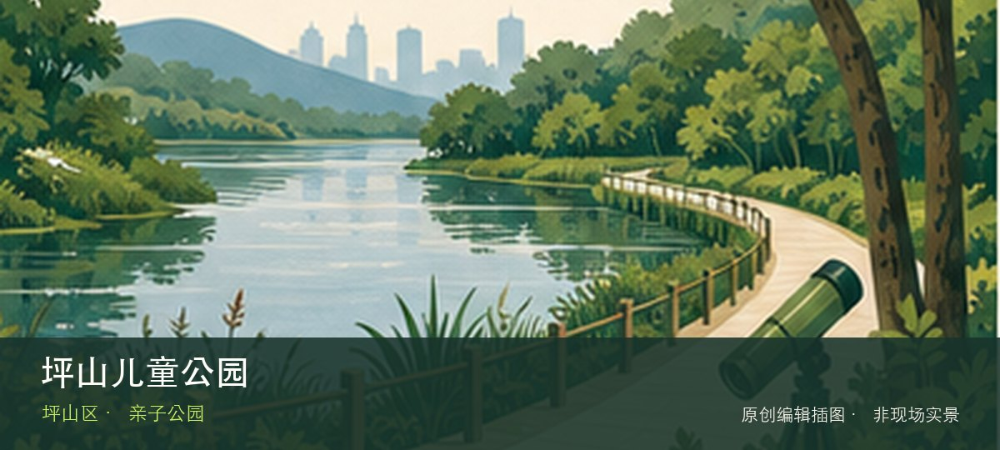

适合谁
适合亲子和自然教育，但体验高度依赖孩子体力、活动日与设施开放情况。

编辑配图·非现场实景SHENZHEN GUIDE · 246
坪山 · 亲子公园
坪山儿童公园位于坪山，分龄游乐、自然教育与开放草地服务家庭客群，热门日期的预约、设备检修和遮阴条件决定实际体验。先辨认分龄儿童设施，再观察自然教育节点，两者共同说明这里为何不能被同类地点的泛化标签替代。带孩子到访时，可把分龄儿童设施与自然教育节点转化为两项能够完成的观察任务，不必追求看完所有设施。活动、花期和设备开放受日期影响，先确认预约、遮阴、饮水与返程条件。
WHY GO
适合亲子和自然教育，但体验高度依赖孩子体力、活动日与设施开放情况。
首次游览坪山儿童公园不求走全，先完成分龄儿童设施这一项观察，再根据同行者体力选择自然教育节点，并保留原路退出方案。
公共交通先到坪山片区，再以坪山儿童公园公开参观入口为终点；多入口地点须按计划游线选择入口，并预先锁定返程站点。
导航至坪山儿童公园官方开放入口配套或邻近正规公共停车场；周末满位即改乘公共交通，不在绿道口、村道或消防通道临停。
秋冬与春季通常更舒适；花期、采摘和节庆随日期变化，夏季避开正午并预留防暑避雨方案。
NEARBY IDEAS